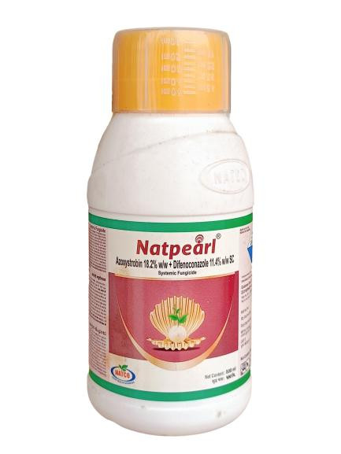

Technical Name: Pymetrozine 30% + Dinotefuran 10% + Pyraclostrobin 20% WG
Mode of Action: Pymetrozine and Dinotefuran act as systemic insecticides, disrupting feeding behavior and nervous system activity of sap-sucking pests. Pyraclostrobin functions as a fungicide, inhibiting mitochondrial respiration in fungi, providing broad-spectrum disease control.
Major Crops: Wheat, Barley, Maize (Corn), Apple, Grapes, Citrus fruits, Tomatoes, Potatoes, Peppers, Beans, Peas, Soybeans, Sunflower
Target Pests: Brown plant hopper, White backed plant hopper, Blast disease, Leaf rust, Powdery mildew, Fusarium head blight, Apple scab, Grape downy mildew, Citrus canker, Late blight, Downy mildew, Rusts, Mildew
Presentation Available: 500 ml, 1 L
Company: Natco